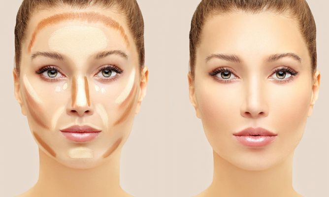

¡Hola amantes del maquillaje! 💁♀️
La base de maquillaje es el lienzo sobre el cual construimos nuestro look. Aprender a aplicarla correctamente es clave para lograr un rostro radiante y perfectamente maquillado. ¡Vamos a sumergirnos en el arte de aplicar la base! 💅
Paso 1: Prepara tu Rostro 🌺
Comienza con una piel limpia e hidratada. Aplica tu crema hidratante habitual para crear una base suave. Esto ayudará a que la base se deslice fácilmente y se mezcle uniformemente con tu piel. 🧴
Paso 2: Encuentra tu Tono Perfecto 🎨
Selecciona una base que coincida perfectamente con tu tono de piel. Puedes probar en la mandíbula para encontrar el tono más adecuado. Recuerda que la base debe fundirse naturalmente con tu piel, sin crear líneas de demarcación. 👩🎨
Paso 3: Aplica en Pequeñas Cantidades 🌟
Es mejor empezar con una pequeña cantidad de base y agregar más si es necesario. Puedes aplicar pequeños puntos en la frente, nariz, mejillas y barbilla para luego difuminar. Así, evitas un exceso de producto. ⚖️
Paso 4: Difumina con Brocha o Esponja 🖌️
Usa una brocha o esponja para difuminar la base. Puedes hacer movimientos circulares o pinceladas suaves para lograr una aplicación uniforme. Presta atención a las áreas alrededor del cabello y la mandíbula. 🔄
Paso 5: Fija con Polvo Translúcido 🌬️
Si quieres asegurarte de que tu base permanezca intacta, aplica una capa ligera de polvo translúcido para fijar el maquillaje. Esto ayudará a controlar el brillo y a dar un acabado duradero. 🌈
Paso 6: ¡Listo para Brillar! ✨
Ahora que has aplicado tu base, estás listo para construir el resto de tu look. Agrega tu maquillaje favorito en ojos, labios y mejillas para completar tu estilo. ¡Brilla con confianza! 💖
¡Y ahí lo tienes, amigas! Consejos sencillos para aplicar la base de maquillaje y lograr un rostro impecable. ¡Que tu maquillaje sea tan radiante como tu personalidad! 🌟